1上學期 第 2 章
生物體的構造層次
答案卡
點題號可跳到該題詳解。開啟「遮住答案」後，點一下塗卡格才會顯示答案。
詳解
洋蔥的表皮細胞有細胞壁，具有保護細胞的功能；蘑菇為真菌類，其細胞壁由幾丁質組成；葉綠體存在於綠色的植物細胞中，所以兩者皆不具有葉綠體。
看題目
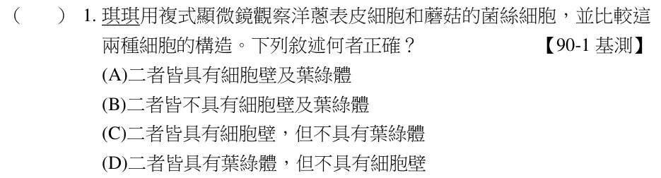
(A)細胞核中不含葉綠體；(C)為細胞壁；(D)為粒線體。
看題目
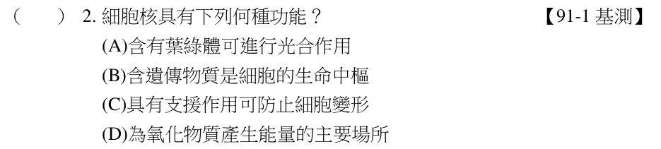
單細胞生物沒有太複雜的構造，通常利用擴散作用來和外界進行物質的交換。
看題目
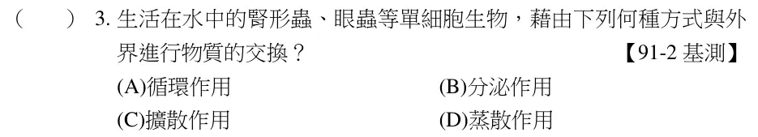
蘋果、金針花與豌豆為生殖器官。
看題目
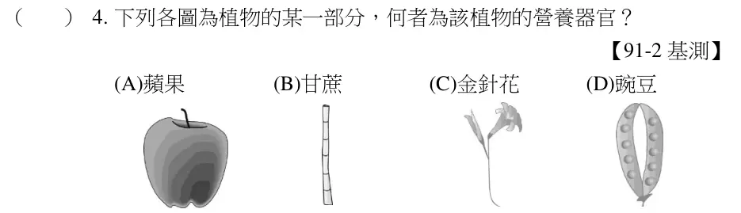
因為細胞大部分為透明無色，利用染劑染色，會較容易觀察，亞甲藍液為常用的染劑。
看題目
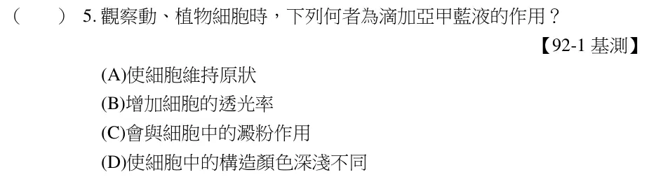
葡萄糖需要藉由細胞膜上特殊的蛋白質才能進出細胞，而氧和二氧化碳則不用。
看題目
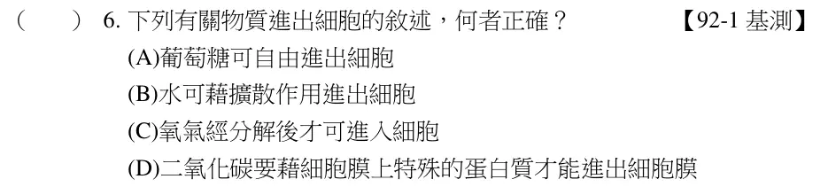
(A)為平滑肌；(B)為神經細胞；(C)立方皮膜組織；(D)可能為心肌。
看題目
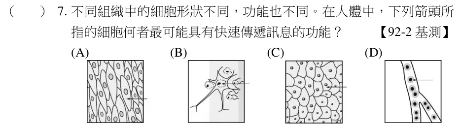
(A)植物的營養器官為根、莖和葉，繁殖器官為花、果實及種子；(B)(C)(D)皆為果實或種子。故答案為(A)。
看題目
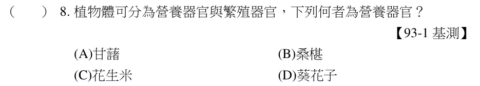
排骨肉屬於（肌肉）組織，豌豆則為（生殖）器官。
看題目
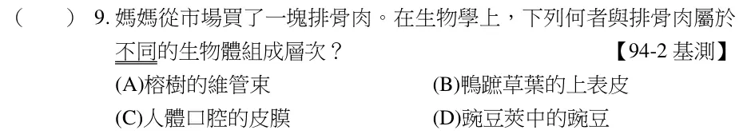
(A)植物葉的表皮與動物的皮膚為組織層次；(C)植物葉表皮上的保衛細胞為細胞層次，動物的腎臟為器官層次；(D)植物的花和果實為器官層次，動物的精子和卵為細胞層次。
看題目
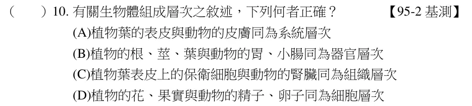
(A)液胞為細胞內水、養分及廢物的儲存庫；(B)細胞膜為細胞的門戶，控制物質的進出；(C)細胞核為細胞生命中樞；(D)粒線體為細胞行呼吸作用，產生能量之處。
看題目
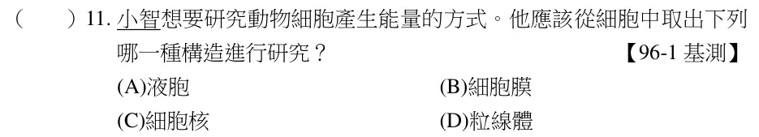
(B)為細胞，其他皆為組織。
看題目
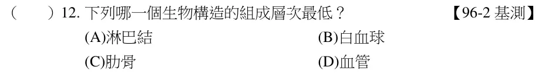
物質會由高濃度擴散至低濃度處，但甲燒杯中的澱粉為大分子無法通過膜，故放置一小時後，甲燒杯中：袋內水進入燒杯中，燒杯中的溶液濃度下降；乙燒杯中：袋內水進入燒杯中，且燒杯中葡萄糖進入袋內，燒杯中溶液濃度下降。而甲袋中成分為水；乙袋中成分為水與葡萄糖，均不會使碘液呈藍黑色。故答案為(B)。
看題目
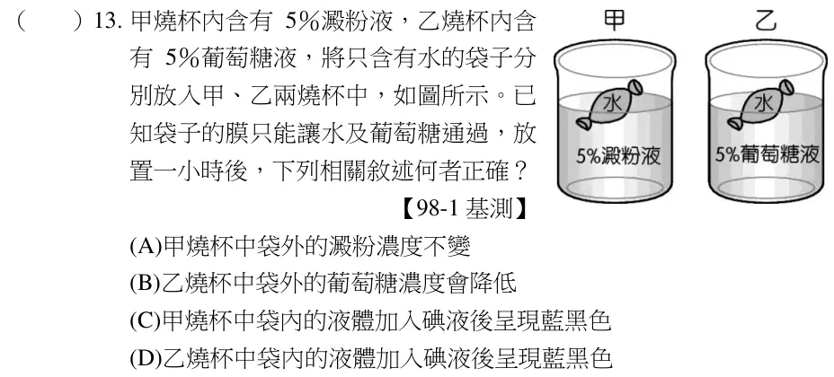
青蛙→(甲)兩生類；蜥蜴→(丁)爬蟲類；鴨嘴獸→(丙)哺乳類。
看題目
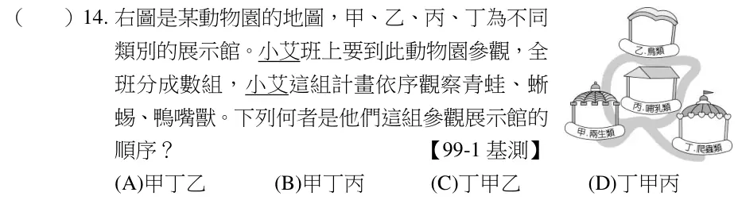
浸入10％及20％的蛋白質溶液重量增加（袋子內水增加）；浸入30％及40％的蛋白質溶液重量減少（袋子內水減少）。故袋內蛋白質濃度必介於20％～30％間（袋內水不增不減）。故選(B)。
看題目
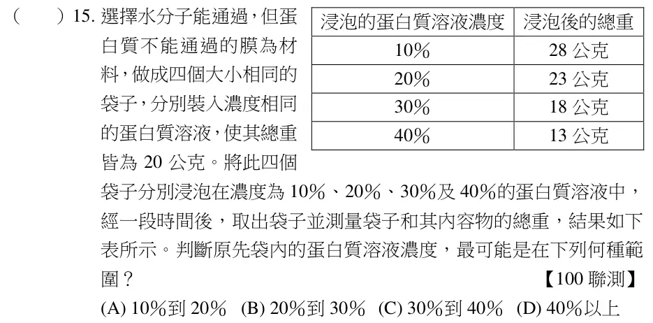
(B)泌尿系統不含肝臟；(C)可由多個器官系統聯合成個體；(D)神經組織包含神經細胞。故選(A)。
看題目
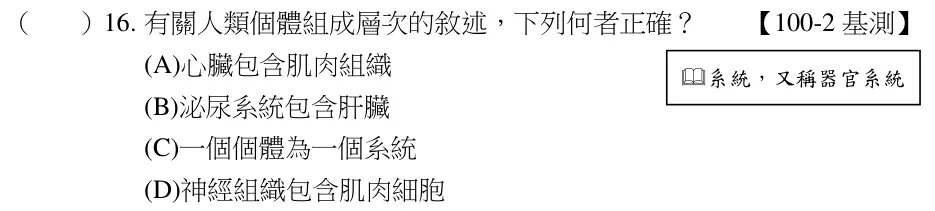
在細胞中，粒線體是進行呼吸作用的主要細胞構造，其主要目的在於分解養分產生能量供細胞利用。故選(D)。
看題目
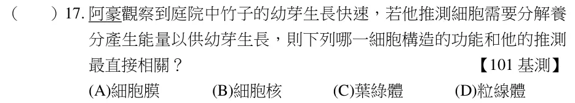
細胞構造中的細胞膜，控制各種物質的進出。故選(B)。
看題目
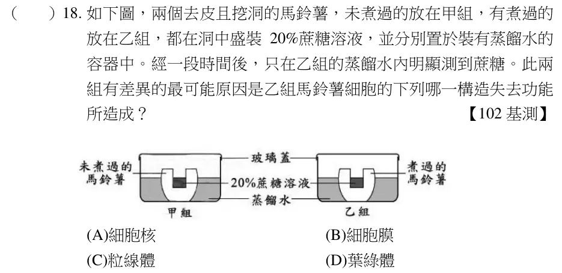
細胞中能分解葡萄糖以產生能量的胞器為粒線體，在本題中，根、莖、葉、花、果實和種子等器官之細胞中皆具有粒線體。故答案為(C)。
看題目
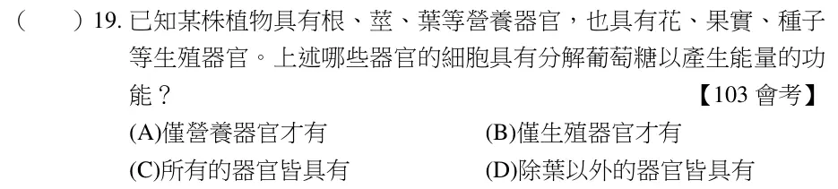
甲為細胞核、乙為液胞、丙為粒線體、丁為葉綠體，粒線體負責產生能量供細胞使用。故選(C)。
看題目
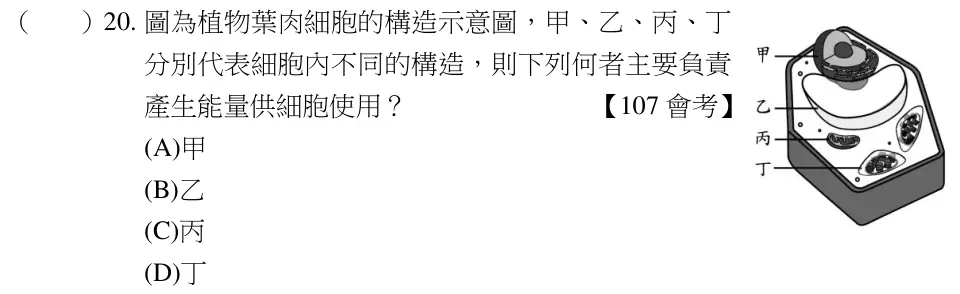
人體白血球為動物細胞，不具細胞壁，若放在蒸餾水中一段時間，水分會滲透進入細胞中，導致細胞破裂；植物的保衛細胞具有細胞壁，若放蒸餾水中一段時間，水分雖會滲透進入細胞中，但因有細胞壁的保護，細胞並不會破裂。故選(D)。
看題目
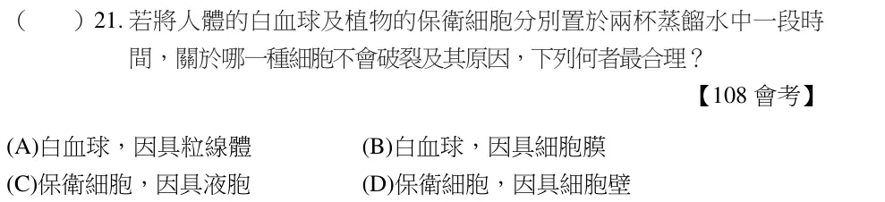
植物體的細胞中，只有含有葉綠體的細胞可進行光合作用，但植物體全身的細胞卻都必需進行呼吸作用以獲取能量。故呼吸作用的細胞數目大於可行光合作用的細胞數目。故選【C】。
看題目
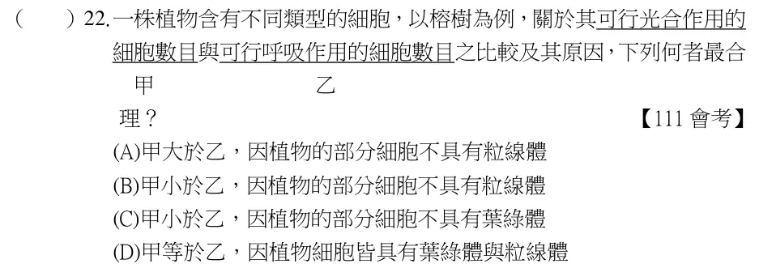
體積大小為氫原子＜口腔皮膜細胞＜月球＜太陽，根據題意，甲──氫原子，乙──口腔皮膜細胞，丙──月球，丁──太陽。故選【B】。
看題目
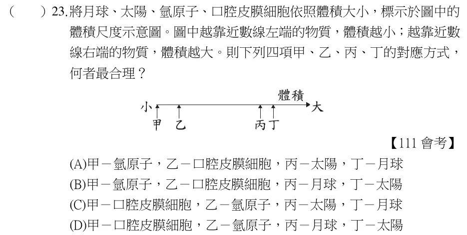
醃漬時，較多的水會從細胞流出造成脫水，因此細胞膜應呈現如同小凱的示意圖。故選(A)。
看題目
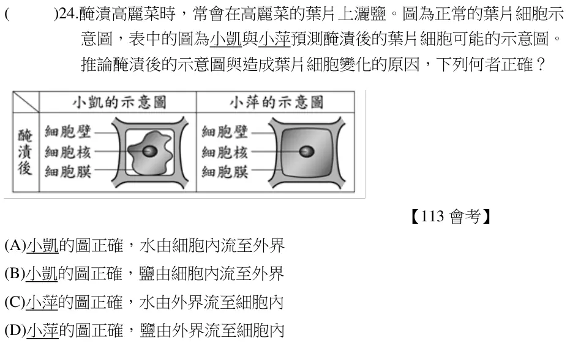